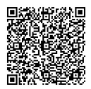

QUER AJUDAR A GENTE?
Existem muitas formas de nos ajudar a cuidar dos mais de 450 cães que cuidamos e alimentamos todos os dias, fora os cães que ajudamos a sustentar de outros protetores.
Você pode doar ração, cobertores, medicamentos, material de limpeza e de procedimento ou fazer uma doação em dinheiro, o que nos ajuda no pagamento de despesas como conta de água, luz, telefone, internet, funcionários, impostos, compra de ração, medicamentos, veterinários, exames laboratoriais, procedimentos cirúrgicos, combustível, feiras de adoção, entre tantas outras
ITAÚ
Associação Focinhos de Luz
Banco: 001
Agência: 1234
Conta Corrente: 567890-1
CNPJ: 12.345.678/0001-90
BRADESCO
Associação Focinhos de Luz
Banco: 001
Agência: 1234
Conta Corrente: 567890-1
CNPJ: 12.345.678/0001-90
35 9 9999-6633
